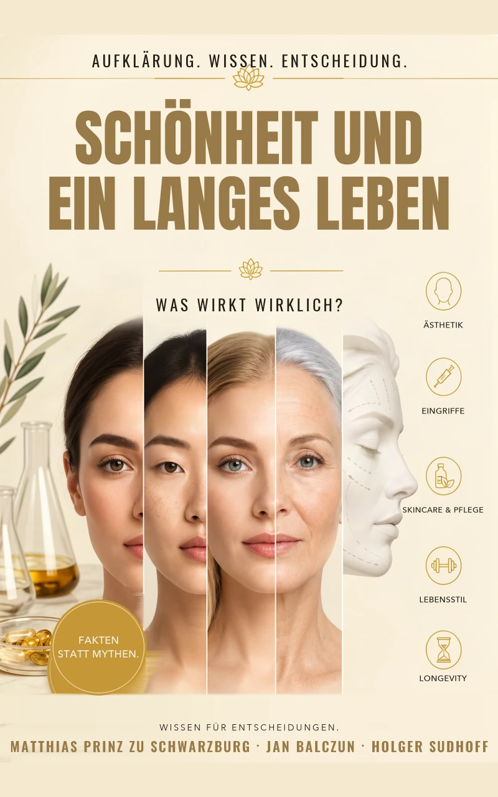

Funktionell
Beurteilung von Nasenatmung, Septum und innerer Stabilität als Grundlage der Operationsplanung.
Priv.-Doz. Dr. med. · HNO · Kopf- und Halschirurgie · Plastische und ästhetische Operationen
Funktionelle und ästhetische Nasenchirurgie. Ärztliche Orientierung vor ästhetischen Gesichtsbehandlungen. Klar, sachlich, ergebnisoffen.
„Eine gute Entscheidung beginnt nicht mit einer Behandlung, sondern mit einer ehrlichen Abwägung.“
Matthias Prinz zu Schwarzburg
Eine Nasenoperation betrifft Atmung, Proportion und Identität zugleich. Deshalb beginnt jede sinnvolle Planung mit einer fachärztlichen Untersuchung, einer realistischen Zielklärung und der Frage, ob eine Operation überhaupt der richtige Weg ist.
Beurteilung von Nasenatmung, Septum und innerer Stabilität als Grundlage der Operationsplanung.
Veränderungen sollen zum Gesicht passen und die persönliche Wiedererkennbarkeit respektieren.
Voroperationen verlangen eine besonders sorgfältige Analyse von Gewebe, Funktion und realistischen Möglichkeiten.
Nasenoperationen werden in Bielefeld und Düsseldorf durchgeführt. Die Kooperation mit Dr. med. Jan Balczun ergänzt den fachlichen Austausch im HNO- und ästhetisch-medizinischen Umfeld.
Funktionelle und ästhetische Nasenchirurgie im interdisziplinären Kopfzentrum.
Ästhetische Nasenchirurgie an der KÖ-KLINIK in Düsseldorf.
Ambulante funktionelle und ästhetische Nasenchirurgie.
Matthias Prinz zu Schwarzburg ist Facharzt für Hals-Nasen-Ohrenheilkunde sowie Kopf- und Halschirurgie mit Zusatzbezeichnung Plastische Operationen. Seine Arbeit verbindet operative Erfahrung, funktionelle Diagnostik und eine zurückhaltende ästhetische Haltung.
Die Deutsch-Indonesische Gesellschaft für Medizin e. V. (DIGM) fördert den medizinischen Austausch zwischen Deutschland und Indonesien. Als Präsident unterstützt Matthias Prinz zu Schwarzburg die fachliche Zusammenarbeit, persönliche Begegnungen und gemeinsame medizinische Projekte.
Mehr über die DIGM und ihre AufgabenWas wirkt wirklich? Das Buch ordnet ästhetische Verfahren, Hautpflege, Lebensstil und Longevity ärztlich und wissenschaftlich ein.

Fakten statt Mythen
Welche ästhetischen Maßnahmen, Hautpflegekonzepte und Lebensstilfaktoren sind sinnvoll – und wo endet die wissenschaftliche Evidenz? Das Buch bietet eine verständliche, kritische Einordnung für informierte Entscheidungen.
Die Links führen zu den jeweiligen Produktseiten bei Amazon.
Orientierung vor der ersten ästhetischen Gesichtsbehandlung. Der Kurs hilft, Verfahren, Grenzen und typische Risiken besser einzuordnen und ein ärztliches Beratungsgespräch vorbereitet zu führen.
89 €
Einmalzahlung · kein Abo · digitaler Download über Digistore24
Kurs bei Digistore24 ansehenAllgemeine Anfragen zu Tätigkeit, Kooperationen oder Kurs. Keine individuelle medizinische Beratung per E-Mail.